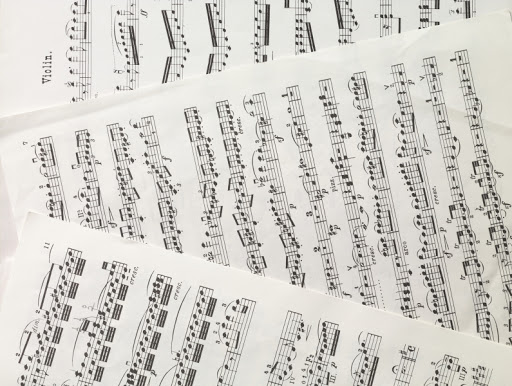

00-talet
Tidigt på 2000-talet tog kvinnor allt mer plats på den musikaliska scenen. De största genrerna under 2000-talet var pop, rock, R&B och Hip-hop som under ett par år dominerade en stor del av musikindustrin med artister som Eminem, 50 Cent och Dr Dre.
En till stor förändring för musiken under 00-talet kom att bli de nya sätten att sprida musik via internet över YouTube och andra hemsidor.
En stor artist under 00-talet var Eminem och han släppte flera kända låtar som ex. "Lose Yourself", "Till I Collapse" och "Without Me".
